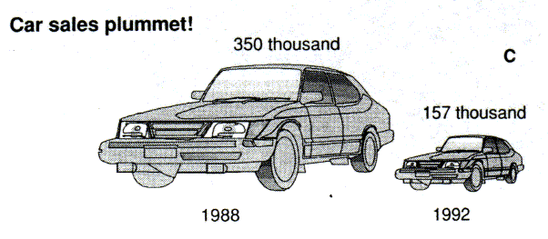
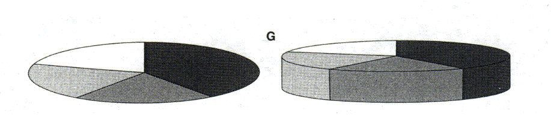

Stat 2300, Fall 2004
Business Statistics - International Program
Non-CyberStats Material
Week 9: Misleading Graphs and Charts
Even if the correct data is plotted, charts can be easily
distorted. In many cases, these charts
are still formally correct.
We have to look even more carefully at a graph to see its full meaning,
in particular when it has been manipulated, either
intentionally or unintentionally.
Bowerman and O'Connell discuss how the visual impression
of bar charts and line charts changes when the scale
is changed, one of the axes is stretched or compressed,
or the width of bars is changed.
You should carefully
read this book extract, then answer the related homework questions.
Tufte presents a large number of distorted charts
that have been drawn from newspapers, often
presenting business/economic data. The visual impression
for most of those charts is quite misleading.
You should carefully look at the examples (but don't have to
read the entire book extract), then answer the related homework questions.
References:
Bruce L. Bowerman, Richard T. O'Connell,
Business Statistics in Practice, Third Edition, IE,
McGraw-Hill, Irwin, 2003, pp. 93-97.
Edward R. Tufte, The Visual Display of Quantitative Information,
Graphics Press, Cheshire, Connecticut, 1983, pp. 53-77.
Homework:
- 1) Answer Question 2.67 (abcd) on pages 96 and 97 from Bowerman and O'Connell.
- 2) In addition to the "shrinking dollar fallacy" reported on page 70
in Tufte, there is another problem with this graph. Think historically - and explain.
A Web page about American presidents
should help! Finally, sketch a better graph.
- 3) What is wrong with the following graph, taken from Wahlgren et al.?
Clearly explain and sketch a better graph.

- 4) Since the introduction of computer technology, three dimensional
charts have become a common sight, in particular for business/economic
data. They can be easily produced with Microsoft Excel.
However, these charts often give a
misleading comparison. Look at the two 3D pie charts below.
According to the visual impression, rank the segments in size for
the left and the right pie chart, e.g., light gray is the biggest,
followed by white, followed by dark gray, followed by medium gray.
Now, try to assign a percentage to each area, e.g., white = 40%,
light gray = 30%, medium gray = 20%, and dark gray = 10%.

Answers to this homework assignment preferably should be
turned in on paper during your weekly meeting in week 10.
If this does not work for you, please e-mail your answers to
Kenny at Advanced Learning (usu@in-learning.edu.hk)
before your weekly meeting in week 10 so he can
pass on a printout of your answer to Joseph,
your local instructor. Please do NOT
send your answers to Joseph because he has some problems
to receive attachments due to filtering. However, you should
send a short e-mail without attachment to Joseph (sjho@i-cable.com)
so he knows that your full homework answers have been sent to Kenny.
Week 10: Why NOT to use Microsoft Excel for Statistics
Microsoft Excel is a very popular tool in the business/economic world. However,
any user should keep in mind that it is in the first place a spreadsheet program
that allows handling large amounts of text and numerical data,
but never was specifically designed for statistical purposes. Unfortunately,
many users conduct most of their statistical applications with
Microsoft Excel. The articles below provide some insight why
Microsoft Excel should not be used for statistics.
Cryer summarizes several problems with Microsoft Excel and comes
to the conclusion:
"Due to substantial deficiencies, Excel should
not be used for statistical analysis. We should discourage
students and practitioners from such use."
You should carefully
read this article, then answer the related homework questions.
Knüsel reports on the reliability of Microsoft Excel
for statistical purposes and comes to the conclusion:
"So one has again to warn the scientific community against
using Microsoft Excel for statistical purposes."
You should carefully
read this article, then answer the related homework questions.
McCullough looks at the history of different Microsoft Excel
versions (from Excel 5.0 to Excel 2002) and wonders:
"Microsoft has a proven track record of not fixing errors
in the statistical procedures of Excel."
You should carefully
read this article, then answer the related homework questions.
McCullough and Wilson discuss the accuracy of statistical procedures
in Microsoft Excel 2000 and Excel XP and come to the conclusion:
"Persons desiring to conduct statistical analyses of data are
advised not to use Excel [97]. An examination of Excel 2000
and Excel XP provides no reason to revise that conclusion."
You should carefully look at the results in Tables 2 through 5 (but don't have to
read the entire article), then answer the related homework questions.
The higher the table value, the better the performance (15 is best, 0 is worst).
References:
Jonathan D. Cryer,
Problems With Using Microsoft Excel for Statistics,
Proceedings of the Annual Meeting of the American Statistical Association,
August 5-9, 2001, CD.
Leo Knüsel,
On the Reliability of Microsoft Excel XP for Statistical Purposes,
Computational Statistics & Data Analysis,
Vol. 39, No. 1, 2002, pp. 109-110.
B. D. McCullough,
Does Microsoft Fix Errors in Excel?,
Proceedings of the Annual Meeting of the American Statistical Association,
August 5-9, 2001, CD.
B. D. McCullough, Berry Wilson,
On the Accuracy of Statistical Procedures in Microsoft Excel 2000 and Excel XP,
Computational Statistics & Data Analysis,
Vol. 40, No. 4, 2002, pp. 713-721.
Homework:
- 1) According to Cryer, what are the main problems with
Microsoft Excel for Statistics?
- 2) Which additional problems have been reported by Knüsel?
- 3) According to McCoullough, what happens to known errors in
Microsoft Excel (from one version to another)? Do they get fixed,
do they just remain in the upgrade, or do they get replaced
by other errors? Be specific.
- 4) McCullough and Wilson compare numerical results of Microsoft
Excel with those obtained by the statistical package Stata.
Tables 2 through 5 are the summaries for 4 major statistical applications.
According to these tables, where does Excel perform better than Stata,
where does it perform about the same as Stata, and
where does it perform worse than Stata? As a reminder, the higher a value,
the better the performance is (15 is best, 0 is worst).
- 5) The cited references extensively critique the performance
of Excel. Does WebStat do better?
Check the following result with WebStat:
On page 3, Cryer introduces some paired data set with
some of the data missing. Cryer's conclusion of the result
produced by Excel is that
"Means, variances, and df are all wrong (for paired data)!".
First, explain why these results are incorrect for paired data.
Then, redo this example with WebStat. Does the WebStat result
make more sense?
Answers to this homework assignment preferably should be
turned in on paper during your weekly meeting in week 11.
If this does not work for you, please e-mail your answers to
Kenny at Advanced Learning (usu@in-learning.edu.hk)
before your weekly meeting in week 11 so he can
pass on a printout of your answer to Joseph,
your local instructor. Please do NOT
send your answers to Joseph because he has some problems
to receive attachments due to filtering. However, you should
send a short e-mail without attachment to Joseph (sjho@i-cable.com)
so he knows that your full homework answers have been sent to Kenny.